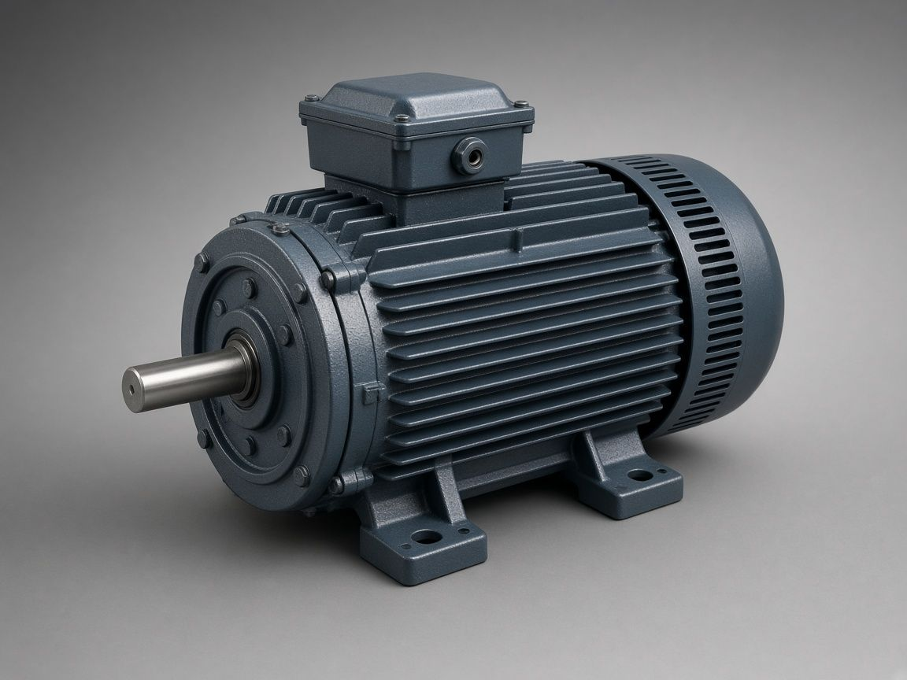
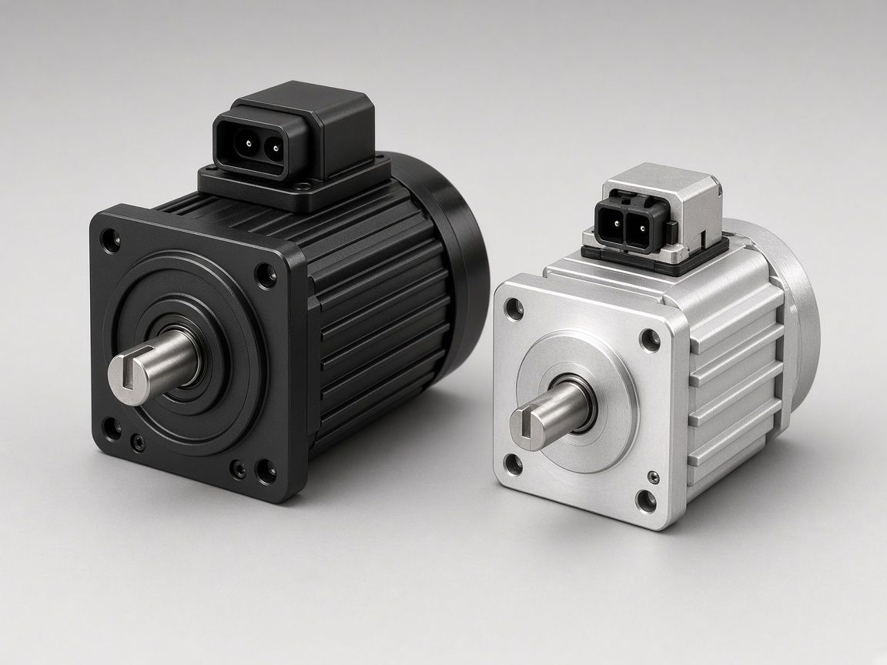
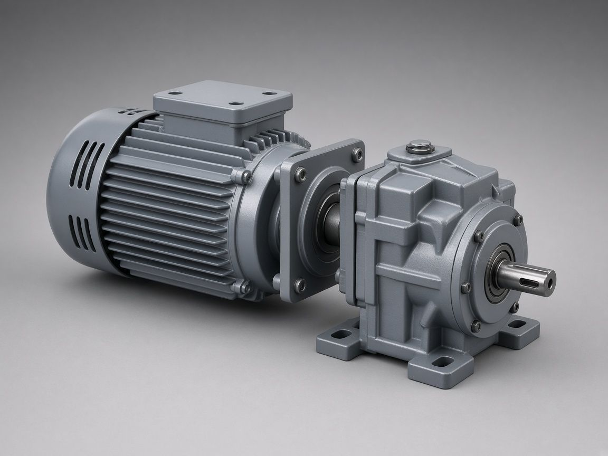
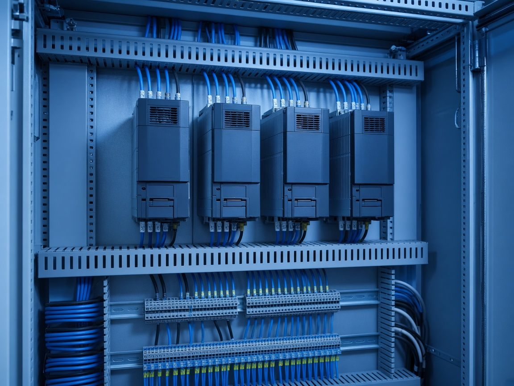

AC Induction Motors
洽詢此類產品
AC 感應馬達
三相與單相交流感應馬達是工業現場最普遍的動力來源，結構簡單、耐用且維護容易，廣泛用於泵浦、風機、壓縮機與輸送設備。我們可依負載型態、運轉時數與電源條件，協助評估合適的機座、功率與效率等級。
產品範圍
- 三相／單相交流感應馬達
- 臥式、立式、法蘭等多種安裝型式
- 可依需求評估高效率等級機種（如 IE2／IE3／IE4）
- 可搭配變頻器進行調速運轉
常見應用
泵浦與水處理風機與空調空壓機輸送設備一般機械

DC Motors
洽詢此類產品
DC 直流馬達
直流馬達具備起動轉矩大、速度控制直覺的特性，適用於需要精細調速或以直流電源供電的設備。可提供有刷與無刷（BLDC）等不同型式的採購與選型建議。
產品範圍
- 有刷直流馬達、無刷直流馬達（BLDC）
- 低壓直流供電之設備應用
- 可評估搭配之驅動器與控制方式
- 小型化、輕量化需求之選型協助
常見應用
搬運車輛自動化設備包裝機械特殊設備

Servo & Stepper Motors
洽詢此類產品
伺服馬達／步進馬達
針對需要精準定位、速度與轉矩控制的自動化應用，提供伺服與步進馬達的選型與採購協助，並可協助確認馬達與驅動器、編碼器、減速機之間的搭配。
產品範圍
- AC 伺服馬達與驅動器搭配評估
- 步進馬達與步進驅動器
- 慣量比、轉矩與轉速需求試算協助
- 可搭配行星減速機等傳動元件
常見應用
機械手臂CNC 與工具機半導體／電子設備包裝與印刷精密定位平台

Gear Motors
洽詢此類產品
減速馬達
減速馬達將馬達與齒輪減速機整合，以較低轉速輸出較大轉矩，是輸送線與各類傳動機構的常見選擇。我們可依輸出轉速、轉矩與安裝空間，協助評估減速比與機型。
產品範圍
- 斜齒輪、蝸輪蝸桿、平行軸等減速型式
- 依輸出轉速與轉矩評估減速比
- 腳座式、法蘭式、中空軸等安裝方式
- 可整合剎車或變頻控制需求
常見應用
輸送帶與物流攪拌設備升降機構食品與包裝環保設備

Explosion-proof & Special Purpose
洽詢此類產品
防爆／特殊用途馬達
針對易燃易爆環境、高溫、多粉塵、高濕或戶外等特殊工況，協助確認現場條件與規格需求，媒合適用之特殊用途馬達，並依專案需求進行客製化規格整合。
產品範圍
- 防爆型馬達（依現場危險區域劃分確認規格）
- 高防護等級、耐候及戶外型
- 高溫、高濕、粉塵等特殊環境用途
- 非標準尺寸、軸端或電壓之客製化整合
常見應用
石化與化工塗裝與溶劑作業粉體與穀物處理船舶與戶外設施

Drives & Power Systems
洽詢此類產品
變頻器與動力系統產品
除馬達本體外，亦提供相關電機與動力系統產品之貿易服務，包括變頻器、伺服驅動器及傳動配件，協助客戶整合完整的驅動方案，提升設備效率與控制彈性。
產品範圍
- 通用型變頻器（VFD）
- 伺服／步進驅動器
- 減速機、聯軸器等傳動配件
- 馬達與驅動器搭配之相容性確認
常見應用
節能改善產線自動化設備汰換升級系統整合專案
Selection Guide
詢價前，建議準備的資訊
提供越完整的資訊，我們越能快速給出精準的規格建議與報價。若部分資訊不確定也沒關係，提供設備用途與現有馬達銘牌照片，我們會協助您逐步確認。
開始詢價電氣規格功率（kW／HP）、電壓、頻率、相數
機械規格轉速／極數、轉矩、減速比、軸徑
安裝方式腳座、法蘭、立式、機座尺寸
使用環境溫度、濕度、粉塵、防爆、戶外
應用設備泵浦、風機、輸送、定位等用途
數量與交期預計數量、期望交貨時間